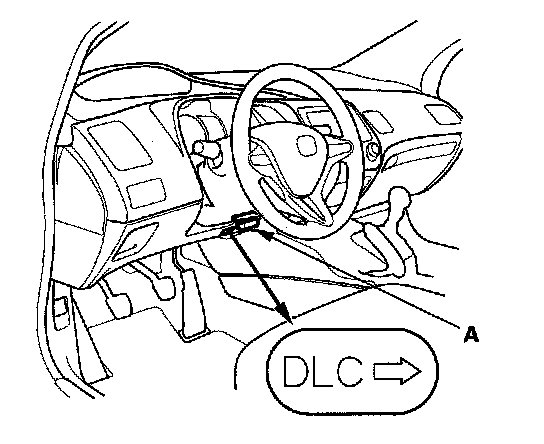
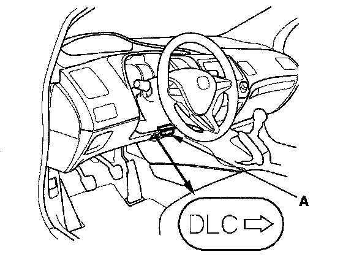
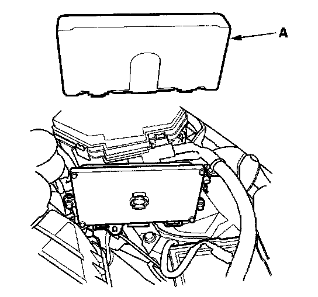
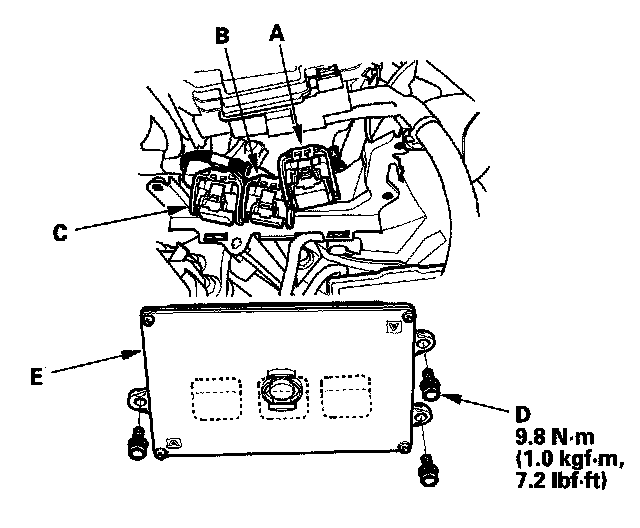

Updating the ECM/PCM
Updating the ECMSpecial Tools Required
- Honda diagnostic system (HDS)
- Honda interface module (HIM)
- HDS pocket tester
NOTE:
- Use this procedure when you need to update the ECM during a troubleshooting procedures.
- Make sure the HDS/HIM has the latest software version.
- Before you update the ECM, make sure the battery in the vehicle is fully charged.
- Never turn the ignition switch OFF during the update. If there is a problem with the update, leave the ignition switch ON.
- To prevent ECM damage, do not operate anything electrical (headlights, audio system, brakes, A/C, power windows, moonroof (if equipped), door locks, etc.) during the update.
- To ensure the latest program is installed, do an ECM update whenever the ECM is substituted or replaced.
- You cannot update an ECM with a program it already has. It will only accept a new program.
- High temperature in the engine compartment might cause the ECM to become too hot to run the update. If the engine has been running before this procedure, open the hood and cool the engine compartment.
- If you need to diagnose the Honda interface module (HIM) because the HIM's red (# 3) lamp came on or was flashed during the update, leave the ignition switch in the ON (II) position when you disconnect the HIM from the data link connector (DLC). This will prevent ECM damage.
1. Turn the ignition switch ON (II), but do not start the engine.

2. Connect the HDS to the data link connector (DLC) (A) located under the driver's side of the dashboard.
3. Make sure the HDS communicates with the ECM. If it doesn't, go to the DLC circuit troubleshooting. Testing and Inspection If you are returning from the DLC circuit troubleshooting, skip step 4 to 5 and clean the throttle body after updating the ECM.
4. USA, Canada models: Select the INSPECTION MENU with the HDS.
5. USA, Canada models: Select the ETCS TEST, then select the TP POSITION CHECK, and follow the HDS screen prompts.
NOTE: If the TP POSITION CHECK indicates FAILED, continue this procedure.
6. Exit the HDS (USA, Canada models). Select the update program, and follow the screen prompts to update the ECM.
7. If the software in the ECM is the latest, disconnect the HDS/HIM from the DLC, and go back to the procedure that you were doing. If the software in the ECM is not the latest, follow the instructions on the screen.
NOTE: If the ECM update system requires you to cool the ECM, follow the instructions on screen. If you run into a problem during the update procedure, (programming takes over 15 minutes, status bar goes over 100 %, immobilizer light flashes, HDS tablet freezes, etc.), follow these steps to minimize the chance of damaging the ECM:
- Leave the ignition switch in the ON (II) position.
- Connect a jumper battery (do not connect a battery charger).
- Shut down the HDS.
- Disconnect the HDS from the DLC.
- Reboot the HDS.
- Reconnect the HDS to the DLC, and try the update procedure again.
8. USA, Canada models: If the TP POSITION CHECK failed in step 6, clean the throttle body.
9. Do the ECM idle learn procedure.
10. Do the CKP learn procedure.
Substituting the ECM
Special Tools Required
- Honda diagnostic system (HDS)
- Honda interface module (HIM)
- HDS pocket tester
NOTE: Use this procedure when you need to substitute a known-good ECM during troubleshooting procedures.
1. Make sure you have the anti-theft codes for the radio and the navigation system (if equipped).

2. Connect the HDS to the data link connector (DLC) (A) located under the driver's side of the dashboard.
3. Turn the ignition switch ON (II).
4. Make sure the HDS communicates with the ECM. If it doesn't, go to the DLC circuit troubleshooting. Testing and Inspection If you are returning from DLC circuit troubleshooting, skip step 5 to 10, and clean the throttle body after substituting the ECM.
5. USA, Canada models: Select the INSPECTION MENU with the HDS.
6. USA, Canada models: Select the ETCS TEST, then select the TP POSITION CHECK, and follow the screen prompts.
NOTE: If the TP POSITION CHECK indicates FAILED, continue this procedure.
7. Turn the ignition switch OFF.
8. Remove the battery.

9. Remove the cover (A).

10. Remove the bolts (D), then remove the ECM (E).
11. Disconnect ECM connectors A, B, and C.
NOTE: ECM connectors A, B, and C have symbols (A=D, B=./\., C=O) embossed on them for identification.
12. Install the ECM and the battery in the reverse order of removal.
13. Turn the ignition switch ON (II).
NOTE: USA, Canada models: DTC P0630 "VIN Not Programmed or Mismatch" may be stored because the VIN has not been programmed into the ECM; ignore it, and continue this procedure.
14. USA, Canada models: Manually input the VIN to the ECM with the HDS.
15. Update the ECM if it does not have the latest software.
16. Select the IMMOBI SYSTEM with the HDS.
17. Enter the immobilizer code using the ECM replacement procedure in the HDS; this allows you to start the engine.
18. Reset the ECM with the HDS.
19. USA, Canada models: If the TP POSITION CHECK failed in step 6, clean the throttle body.
20. Do the ECM idle learn procedure.
21. Do the CKP pattern learn procedure.
22. Enter the anti-theft codes for the radio and the navigation system (if equipped), and set the clock.